12 Utility
Here, have a dollar.
In fact, no brotherman here, have two.
Two dollars means a snack for me
But it means a big deal to you.
—Arrested Development, “Mr. Wendal”
Imagine your university’s student union is holding a lottery. There are a thousand tickets, and the prize is \(\$500\). Tickets cost \(\$1\). Would you buy one?
The expected monetary value of buying a ticket is \(-\$0.50\): \[ \begin{aligned} \E(T) &= (1/1,000)(\$499) + (999/1,000)(-\$1)\\ &= -\$0.50. \end{aligned} \] So it seems like a bad deal.
But some people do buy tickets in lotteries like this one, and not necessarily because they’re just bad at math. Maybe they enjoy the thrill of winning, or even just having a shot at winning. Or maybe they want to support the student union, and foster fun and community on campus.
Suppose your friend is one of these people. How might they respond to the calculation above? One thing they could do is replace the dollar amounts with different numbers, numbers that more accurately capture their personal values.
Instead of just a \(\$499\) gain for winning, for example, they might use \(599\), to capture the added value that comes from the thrill of winning. And instead of \(-\$1\) for losing, they might put \(9\) to capture the contribution to campus community that comes from participating in the event.
Then the calculation looks like this: \[ \begin{aligned} \E(T) &= (1/1,000)(599) + (999/1,000)(9)\\ &= 9.59 \end{aligned} \] So buying a ticket has positive expected value now.
Notice how there are no dollar signs anymore. In fact there’s no explicit unit of measurement at all. So what do these numbers represent, if not monetary value?
They represent how good or bad an outcome is, from your friend’s point of view. In decision theory we call these numbers utilities, or utils for short.
If the real value of something is its utility, we should calculate expected utilities instead of expected monetary values:
- Expected Utility
Suppose act \(A\) has possible consequences \(C_1, C_2, \ldots,C_n\). Denote the utility of each outcome \(U(C_1)\), \(U(C_2)\), etc. Then the expected utility of \(A\) is defined: \[ \EU(A) = \p(C_1)\u(C_1) + \p(C_2)\u(C_2) + \ldots + \p(C_n)\u(C_n). \]
So the formula for expected utility is exactly the same as for expected monetary value, except we replace dollars with utils.
According to standard decision theory, the right choice is the act that has the highest expected utility. Or if there’s a tie for highest, then any of the acts tied for highest is a good choice.
12.1 Subjectivity & Objectivity
People have different desires, needs, and interests. Some value friendship most, others value family more. Some prioritize professional success, others favour activism. Some people like ’80s music, others prefer hip-hop—and still others, to my constant surprise, enjoy reggae.
So the value of a decision’s outcome depends on the person. It is subjective. And that raises a big question: if utility is subjective, how can we measure it objectively? Does it even make sense to treat personal tastes and preferences using mathematical equations?
Figure 12.1: Frank Ramsey (1903–1930) died at the age of \(26\), before his discovery could become widely known. Luckily the idea was rediscovered by economists and statisticians in the \(1940\)s.
The classic solution to this problem was discovered by the philosopher Frank Ramsey in the \(1920\)s. The key idea is to quantify how much a person values a thing by considering how much they’d risk to get it.
For example, imagine you have three options for lunch: pizza, salad, or celery. And let’s suppose you prefer them in that order: pizza \(\gt\) salad \(\gt\) celery. We want to know, how does salad compare to your best option (pizza) and your worst option (celery)? Is salad almost as good as pizza, for you? Or is it not so great, almost as bad as celery perhaps?
Here’s how we find out. We offer you a choice, you can either have a salad or you can have a gamble. The gamble might win you pizza, but you might end up with celery instead.
- \(S\): Salad.
- \(G\): A gamble, with probability \(\p(P)\) of pizza and \(1-\p(P)\) of celery.
The question is, how high does the probability \(\p(P)\) have to be before you are indifferent between these two options? How good does your shot at pizza have to be before you’d trade the salad for the gamble, and risk winding up with celery instead?
This is a question about your personal tastes, notice. Some people really like salad, they might even like it as much as pizza. So they’d need the shot at pizza to be pretty secure before they’d give up the salad. Others don’t care much for salad. Like me: I’d be willing to trade the salad for the gamble even if the chances of pizza weren’t very high. For me, salad isn’t much better than celery, but pizza is way better than both of them.
Let’s suppose for the sake of example that your answer is \(\p(P) \geq 1/3\). You’d need at least a \(1/3\) chance at the pizza to risk getting celery instead of salad. Since celery is the worst option, let’s say it has utility zero: \(\u(C)=0\). And since pizza is the best option, let’s say it has utility one: \(\u(P)=1\). What is the utility of salad \(\u(S)\) then?
Figure 12.2: A utility scale for lunch options
We know that you’re willing to trade the salad for the gamble when the probability of winning pizza is at least \(1/3\). So if \(\p(P) = 1/3\), the utility of salad is the same as the expected utility of the gamble: \(\u(S) = \EU(G)\). Therefore: \[ \begin{aligned} \u(S) &= \EU(G)\\ &= \p(P)\u(P) + \p(C)\u(C)\\ &= (1/3)(1) + (2/3)(0)\\ &= 1/3. \end{aligned} \] So salad has utility \(1/3\) for you.
Hey look! We just took something personal and subjective and gave it a precise, objective measurement. We’ve managed to quantify your lunch preferences.
 Figure 12.3: A friend’s utility scale for lunch options
Figure 12.3: A friend’s utility scale for lunch options
Now imagine your friend gives a different answer. They’d need at least a \(2/3\) chance at the pizza to risk ending up with celery instead of salad. So for them, \(\u(S) = \EU(G)\) when \(\p(P) = 2/3\). So now the calculation goes: \[ \begin{aligned} \u(S) &= \p(P)\u(P) + \p(C)\u(C)\\ &= (2/3)(1) + (1/3)(0)\\ &= 2/3. \end{aligned} \] So for your friend, salad is closer to pizza than to celery. For them it has utility \(2/3\).
12.2 The General Recipe
Lunch is important, but how do we apply this recipe more broadly? How do we quantify the value a person places on other things, like career options, their love life, or their preferred music?
What are \(B\) and \(W\)? What are the best and worst options a person could have? I like to think of them as heaven and hell: \(B\) is an eternity of bliss, \(W\) is an eternity of suffering. That way we can look at the big picture. We can quantify a person’s utilities in the grand scheme of things. We can compare all kinds of life-outcomes, big and small. We can measure the utility of everything from raising happy and healthy children, to landing your dream job, to going on a Carribean vacation, to having a cup of coffee. But it’s important to remember that the best and worst outcomes vary from person to person. In fact, for most people eternal bliss (heaven) isn’t the best possible outcome. They’ll want their friends and family to go to heaven too, for example. They may even want everyone else to go to heaven—even their enemies, if they’re a particularly forgiving sort of person.
Here’s the general recipe. We start with our subject’s best possible consequence \(B\), and their worst possible consequence \(W\). We assign these consequences the following utilities: \[ \begin{aligned} \u(B) &= 1,\\ \u(W) &= 0. \end{aligned} \] Then, to find the utility of any consequence \(C\), we follow this recipe. We find the lowest probability \(\p(B)\) at which they would be indifferent between having \(C\) for sure vs. accepting the following gamble:
- \(G\): probability \(\p(B)\) of getting \(B\), probability \(1-\p(B)\) of getting \(W\).
Then we know consequence \(C\) has utility \(\p(B)\) for them.
Why does this method work? Because our subject is indifferent between having option \(C\) for sure, and taking the gamble \(G\). So for them, the utility of \(C\) is the same as the expected utility of the gamble \(G\). And the expected utility of gamble \(G\) is just \(\p(B)\): \[ \begin{aligned} \u(C) &= \EU(G)\\ &= \p(B) \u(B) + (1-\p(B)) \u(W)\\ &= \p(B). \end{aligned} \]
I find it helps to think of this method as marking every point on our utility scale with a gamble, which we can use for comparisons.
Figure 12.4: A utility scale with some arbitrarily selected points of comparison chosen for display: \(u = 7/8\), \(2/3\), \(1/2\), and \(1/6\)
For every utility value \(u\) between \(0\) and \(1\), there’s a gamble whose expected utility is also \(u\). To find such a gamble, we make the possible payoffs \(B\) and \(W\), and we set \(\p(B) = u\) and \(\p(W) = 1 - u\).
These gambles give us points of comparison for every possible utility value \(u\) on our utility scale. Figure 12.4 shows a sample of a few such points. We can’t show them all of course; there are infinitely many, one for every number between \(0\) to \(1\).
Now to find the utility of an outcome—whether it’s a salad, a Carribbean vacation, or a million dollars—we find which of these gambles it’s comparable to. To locate a Carribbean vacation on our scale, for example, we move up the scale from 0 until we hit a gamble where our subject says, “There! I’d be willing to trade a Carribbean vacation for that gamble there.” Then we look at what \(\p(B)\) is equal to in that gamble, and that tells us their utility for a Carribbean vacation.
12.3 Choosing Scales
This method for quantifying utility assumes that \(\u(W) = 0\) and \(\u(B) = 1\). What justifies this assumption? It’s actually a bit arbitrary. We could measure someone’s utilities on a scale from \(0\) to \(10\) instead. Or \(-1\) to \(1\), or any interval.
Question: how would we calculate \(\u(C)\) on a scale from \(-1\) to \(1\)?
It’s just convenient to use \(0\) and \(1\). Because then, once we’ve identified the relevant probability \(\p(B)\), we can immediately set \(\u(C) = \p(B)\). If we used a scale from \(0\) to \(10\) instead, we’d have to multiply \(\p(B)\) by \(10\) to get \(\u(C)\). That would add some unnecessary work.
Figure 12.5: The best possible gamble (top), the worst possible gamble (middle), and an intermediate gamble (bottom)
It’s also inuitive to use the same \(0\)-to-\(1\) scale for both probability and utility. It makes our visualizations of expected utility especially tidy. Expected utility can then be thought of as portion of the unit square. The best possible option is a \(100\%\) chance of the best outcome, i.e. probability 1 of getting utility \(1\). So the best possible choices have area \(1\). Whereas the worst gamble has no chance of getting any outcome with positive utility, and has area \(0\).
You can think of the \(0\) and \(1\) endpoints like the choices we make when measuring temperature. On the celsius scale, the freezing point of water is \(0\) degrees and the boiling point is \(100\). On the Fahrenheit scale we use \(32\) and \(212\) instead. The celsius scale is more intuitive, so that’s what most people use. But the Fahrenheit scale works fine too, as long as you don’t get confused by it.
Notice, by the way, that a person’s body temperature is another example of something personal and subjective, yet precisely and objectively measurable. Different people have different body temperatures. But that doesn’t mean we can’t quantify and measure them.
12.4 A Limitation: The Expected Utility Assumption
A measurement is only as good as the method used to generate it. An oral thermometer only works when the temperature in your mouth is the same as your general body temperature. If you’ve got ice cubes tucked in your cheeks, or a mouthful of hot tea, even the best thermometer will give the wrong reading.
The same goes for our method of measuring utility. It’s based on the assumption that our subject is making their choices using the expected utility formula. When the probability of pizza \(\p(P)\) was \(1/3\), we assumed you were indifferent between keeping the salad and taking gamble on pizza/celery because \(\u(C) = \EU(G)\).
But people don’t always make their choices according to the expected utility formula. Some famous psychology experiments demonstrate this, as we’ll see in Chapter 13. So it’s important to keep in mind that our “utility thermometer” doesn’t always give the right reading.
Our method for quantifying utilities only works when the subject is following the expected utility formula.
12.5 The Value of Money
If you saw \(50\) cents on the ground while walking, would you stop to pick it up? I probably wouldn’t. But I would have when I was younger, back then I had a lot less money. So an additional \(50\) cents made a bigger difference to my day. The more money you have, the less an additional \(50\) cents will be worth to you.
Imagine you won a million dollars in the lottery. Your life would be changed radically (unless you already happen to be a millionaire). But if you win another million dollars in another lottery, that extra million wouldn’t make as big a difference. It’s still a big deal, but not as big a deal as the first million.
 Figure 12.6: The diminishing value of additional money
For most people, gaining more money adds less and less value as the gains increase. In graphical terms, the relationship between money and utility looks something like Figure 12.6.
We can quantify this phenomenon more precisely using our technique for measuring utilities. For example, let’s figure out how much utility a gain of \(\$50\) has, compared with \(\$0\) and \(\$100\).
As usual we set the end-points of our scale at \(0\) and \(1\): \[ \begin{aligned} \u(\$0) &= 0,\\ \u(\$100) &= 1. \end{aligned} \] Then we ask: how high would \(\p(\$100)\) have to be before you would trade a guaranteed gain of \(\$50\) for the following gamble?
- Chance \(\p(\$100)\) of winning \(\$100\), chance \(1-\p(\$100)\) of winning \(\$0\).
For me, I’d only be willing to take the gamble if \(\p(\$100) \geq .85\). So, for me, \(\u(\$50) = .85\). \[ \begin{aligned} \u(\$50) &= \p(\$100)\u(\$100) + \p(\$0)\u(\$0)\\ &= (.85)(1) + (.15)(0)\\ &= .85. \end{aligned} \]
Notice how this fits with what we said earlier about the value of additional money. At least for me, \(\$100\) isn’t twice as valuable as \(\$50\). In fact it’s not even really close to being twice as valuable. A gain of \(\$50\) is almost as good as a gain of \(\$100\): it’s \(.85\) utils vs. \(1\) util.
But what about you: how does a gain of \(\$50\) compare to a gain of \(\$100\) in your life?
Exercises
According to the theory of utility presented in this chapter:
- Utility is subjective: people differ in their priorities, and in the value they place on things like money or food.
- Utility is objective: there is a fact of the matter about how much a given person values a good like money or food, and this can be quantified.
- Both
- Neither
Which of the following best describes the concept of utility used in decision theory?
- Utility measures an option’s chances of having a good outcome.
- Utility is the moral value of an outcome: how good it is from an ethical point of view.
- Utility is the social value of an outcome: how good it is from society’s point of view.
- Utility is the value a person places on an outcome, whether it involves money, food, friendship, or something else.
Lee’s favourite ice cream flavour is chocolate, her least favourite is strawberry. Vanilla is somewhere in between. She would trade a vanilla ice cream for a gamble on chocolate vs. strawberry, but only as long as the chance of chocolate is at least 3/5. How much utility does vanilla have for her on a scale from 0 (strawberry) to 1 (chocolate)?
Sonia has tickets to see The Weeknd tomorrow night. Her friend has tickets to see Beyoncé, and also tickets to Katy Perry. Beyoncé is Sonia’s favourite performer, in fact she would rather see Beyoncé than The Weeknd.
Sonia’s friend offers a gamble in exchange for her tickets to The Weeknd. The gamble has a \(9/10\) chance of winning, in which case Sonia gets the Beyoncé tickets (utility \(1\)). Otherwise she gets the Katy Perry tickets (utility \(0\)).
If Sonia declines the gamble, what can we conclude?
- For Sonia, the utility of seeing The Weeknd is \(9/10\).
- For Sonia, the utility of seeing The Weeknd is greater than \(9/10\).
- For Sonia, the utility of seeing The Weeknd is less than \(9/10\).
- For Sonia, the utility of seeing The Weeknd is \(1/10\).
After giving her calculus midterm, Professor X always offers her students a chance to improve their grade by trying to solve an optional “challenge” problem. If they get it right, their grade is increased by one letter grade: F changes to D, D changes to C, etc. But if they get it wrong, their grade goes down by one letter-grade: A changes to B, B changes to C, etc.
Hui got a C on his midterm. He asks the professor how often students get the challenge problem right and she says they get it right half the time. Hui decides to stick with his C. But he would be willing to try the challenge problem if the chances of getting it right were higher: \(2/3\) or more.
Suppose getting a D has utility \(4/10\) for Hui, while a B has utility \(8/10\).
- What is the expected utility for Hui of trying the challenge problem?
- How much utility does a C have for Hui?
Let’s explore how much value you place on money. We’ll only consider amounts between \(\$0\) and \(\$100\), and we’ll set our scale as usual: \(\u(\$100) = 1\) and \(\u(\$0)=0\).
- Now suppose you are offered a gamble that has probability \(\p(\$100)\) of paying \(\$100\), and probability \(1-\p(\$100)\) of paying \(\$0\). How high would \(\p(\$100)\) have to be for you to be willing to trade a guaranteed \(\$50\) for this gamble? (This is a question about your personal preferences.)
- Based on your answer to part (a), how much utility does gaining \(\$50\) have for you?
- Now consider a gamble that has probability \(\p(\$100)\) of paying $100, and probability \(1-\p(\$100)\) of paying \(\$50\). How high would \(\p(\$100)\) have to be for you to be willing to trade a guaranteed \(\$75\) for this gamble? (This is another question about your personal preferences.)
- Based on your previous answers, how much utility does gaining \(\$75\) have for you?
- In terms of dollars, a gain of \(\$75\) is \(1.5\) times as large a gain as \(\$50\). In terms of your utilities, how does \(\u(\$75)\) compare to \(\u(\$50)\)? Is it more than \(1.5\) times as large? Less? The same?
- Make a graph with dollars on the \(x\)-axis and your utilities on the \(y\)-axis. Plot the four points established in this problem. Then use them to draw a rough sketch of how your utilities increase per dollar.
Martha is trying to decide where to go to university. She applied to three schools: UTM, Western, and Queens. UTM is her first choice, Queens is her last choice.
So far Martha has only heard back from Western. They are offering her early admission: they’ll admit her but only if she agrees right now to go there (she can’t wait until she finds out if the other two schools will admit her).
Based on her grades, Martha knows that if she waits she’ll be admitted to Queens for sure. But her chance of getting into UTM is only \(6/10\).
After thinking about it a while, she can’t decide: a guaranteed spot at Western seems just as good to her as the gamble on UTM vs. Queens.
- If the utility of going to Queens is \(5/10\) for Martha, and the utility of going to UTM is \(9/10\), what is the utility of going to Western?
Martha’s friend is considering York University. Martha didn’t apply to York, but if she had she would be indifferent between these options:
- Accept an early-admissions offer from York and go there.
- Gamble on a \(3/4\) chance at going to Western vs. a \(1/4\) chance of having to go to Queens.
How much utility does going to York have for Martha?
Eleanor wants to get a job at Google so she’s going to university to study computer science. She has to decide between UTM and Western.
Suppose \(1/100\) of UTM’s computer science students get jobs at Google and the rest get jobs at RIM. For Eleanor, a job at Google has utility \(200\) while a job at RIM has utility \(50\).
- What is the expected utility of going to UTM for Eleanor?
Suppose Western students have better odds of getting a job at Google: \(5/400\). And \(360/400\) students go to work at Amazon, which Eleanor would prefer to RIM. On the other hand, the remaining \(35/400\) of them don’t get a job at all, which has utility zero for Eleanor.
After thinking about it, she can’t decide: UTM and Western seem like equally good options to her.
- How much utility does working at Amazon have for Eleanor?
Suppose Eleanor ends up going to UTM, and now she’s about to graduate. Unfortunately, Google isn’t hiring any more. The only jobs available are at Amazon and RIM.
She would have to take a special summer training program to qualify for a job at Amazon, though. And that would mean she can’t get a job at RIM. RIM is offering her a job, but she has to take it now or never.
So, she has to either take the guaranteed job at RIM right now, or gamble on the summer program. The summer program could get her a job at Amazon, or it could leave her unemployed.
- How high would the probability of getting a job at Amazon have to be for the special summer program to be the better option?
Farad wants to go to law school so he’s going to university to study philosophy. He is deciding between Queens and Western.
Suppose \(2/10\) of Western philosophy students who apply to law school get in, the rest go to teacher’s college or medical school. For Farad, going to law school has utility \(250\), and going to teacher’s college or medical school has utility \(50\).
- What is the expected utility of going to Western for Farad?
Suppose Queens students have better odds of getting into law school: \(3/10\). And \(6/10\) go to work for the government, which Farad would prefer to being unemployed. On the other hand, \(1/10\) of them don’t get a job at all, which has utility \(-50\) for Farad.
Farad can’t decide: Western and Queens seem equally good choices to him.
- How much utility does working for the government have for Farad?
Farad ends up going to Western and now he’s about to graduate. Unfortunately, his grades aren’t very good, so he would have to do a special summer program to get into law school. Alternatively he can apply to medical school or teacher’s college, where he would definitely get in.
Farad has to choose between (i) taking the summer program, and (ii) going to medical school or teacher’s college. He won’t have time to do both. So if the summer program doesn’t get him into law school, he’ll end up unemployed.
- How high would his chances of getting into law school have to be for him to risk taking the summer program?
Prove the following statement: if an action has only two possible consequences, \(C_1\) and \(C_2\), and they are equally probable, with \(\u(C_1) = -\u(C_2)\), then the expected utility is zero.